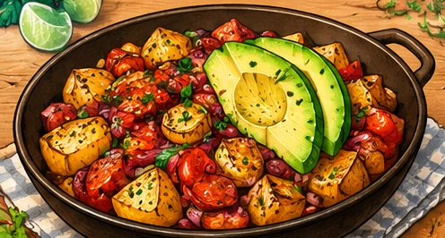

Papas con chorizo et avocat
Pommes de terre dorées, chorizo, poivron et avocat frais.
⏱ 30 min🍽 1 grosse portion💰 4 à 5 €💪 ≈ 35 g protéines≈ 850 kcal
Ingrédients
- 400 g de pommes de terre
- 120 g de chorizo à cuire, émietté (ou chorizo classique en dés)
- 1 avocat moyen (environ 120 g de chair)
- 100 g de poivron rouge
- 60 g d’oignon
- 1 gousse d’ail
- 5 ml d’huile d’olive
- 1/2 c. à café de paprika fumé
- 1/2 citron vert
- Sel et poivre
Préparation
- Couper les pommes de terre en cubes de 1,5 cm. Rincer, puis sécher soigneusement.
- Dans une grande poêle, faire chauffer l’huile à feu moyen-vif. Dorer les cubes 15 à 20 minutes, en remuant régulièrement et en baissant légèrement le feu si nécessaire. Ils doivent être tendres au centre.
- Pendant ce temps, émincer l’oignon, le poivron et l’ail. Les ajouter aux pommes de terre pendant les 6 à 8 dernières minutes de cuisson.
- Ajouter le chorizo émietté et le paprika. Cuire jusqu’à ce que le chorizo soit entièrement cuit et légèrement croustillant. Si le chorizo est déjà cuit, le faire seulement revenir quelques minutes.
- Couper l’avocat en cubes, l’arroser de citron vert et l’ajouter hors du feu. Poivrer et saler légèrement si besoin.
Conservation et réchauffage
Conserver le mélange pommes de terre–chorizo jusqu’à 2 jours au réfrigérateur à 4 °C ou moins, dans une boîte fermée. Réchauffer à la poêle. Ajouter l’avocat frais au moment de manger.
Prix et nutrition : estimations indicatives. Les valeurs exactes dépendent des produits et marques ; à saisir dans MyFitnessPal pour un calcul personnalisé.